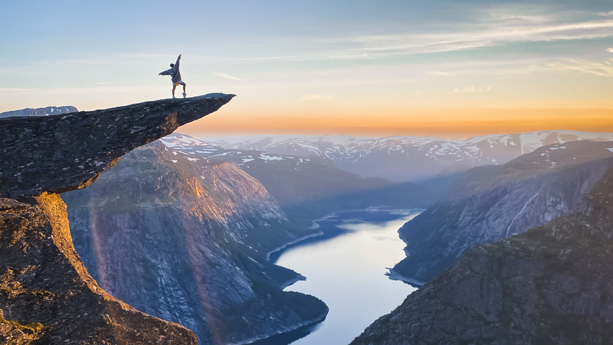
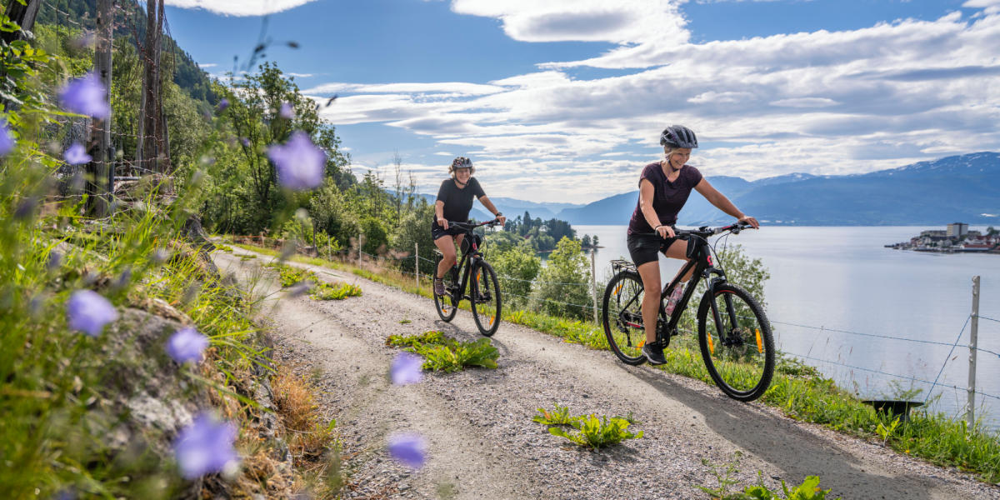
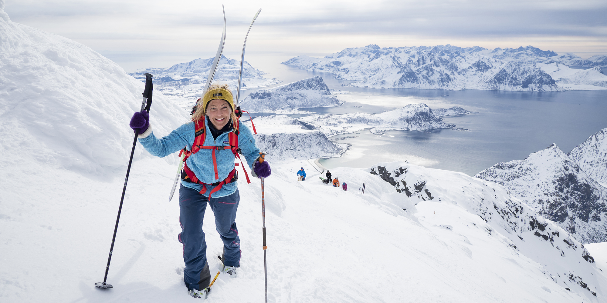

1. Hiking Adventures 🥾
Norway is a hiker’s paradise with endless trails for all levels. Popular destinations include the iconic Trolltunga and Preikestolen.
2. Cycling Tours 🚴♀️
Cycling is a fantastic way to see Norway’s majestic landscapes. From gentle coastal rides to challenging mountain paths, you'll find a trail that suits you.
3. Skiing and Snowboarding 🎿
Winter in Norway is perfect for skiing enthusiasts. Whether you prefer alpine skiing or cross-country, places like Geilo and Trysil await you.
4. Kayaking and Water Sports 🛶
For water lovers, kayaking in the fjords or rafting in thrilling rivers is a must.